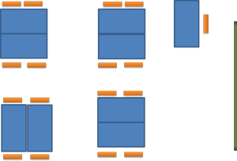
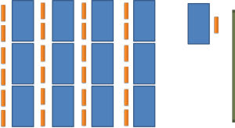

Classroom organisation

Why have a guide to something so obvious?
Because it isn't. Thinking a bit and taking a little time to
move furniture around can make a huge difference to how successful a
lesson is and how comfortable the learners (and you) feel. Lessons
sometimes fail because the teacher hasn't taken the time to
organise the room and the learners in a way that aids rather than
hinders their efforts.
Think for a moment about a classroom set-up you know well and ask
yourself why it was done that way. In other words, what (if any)
thinking went into its design?
Elements of room plan design |
Lesson structure
No lesson (well, not a good one) has all the students static and the focus of attention only in one place for its entirety. Any room plan must, therefore, cater for a variety of phases in the lesson and accommodate changes in interaction and focus.
Constraints
In most rooms, key elements are fixed. Windows are where they
are as are doors and lights, usually. Other bits and
pieces are also usually immobile. These will usually include
display areas like whiteboards and screens as well as computers but
other elements such as the teacher's desk or podium may also be fixed.
Planning has to take this into account.
You may be working in an environment where even the tables and chairs
are immobile. That's a constraint of course but the learners are
not immobile so you can plan around the problem.
Interactions
Good lessons will usually have a variety of interaction patterns.
These may include teacher to learner, teacher to all learners, pairs of
learners, groups of learners and so on. The arrangement of the
furniture has to allow for this. For example, if you want people
to work in threes or fours, having the furniture arranged like this
is unhelpful because the ones at the ends can't talk to each other.
It's better done like this
Sight lines
- Everyone has to be able to see everything. There's little point in having a really useful and engaging graphic if half the class can't see it.
- You have to be able to see everyone and make eye contact with all learners.
- The learners have to be able to see other learners (usually face to face).
Activities
Students will rarely remain in their seats for the whole time in any engaging and motivating lesson. If the plan is for them to wander around and mingle at some point or to move seats to work with different people, you have to make allowance for that.
The teacher's role
Usually, the most mobile person in a classroom is the teacher.
When you are planning how to set up a classroom, think about what you
need to be able to do. Do you, for example, need to sit with pairs
or groups? Do you need to get behind the students? Do you
need to lower your profile and be out of the learners' sight lines? and
so on.
Monitoring easily is the issue here and monitoring is often best done
face to face rather than standing over people.
Some common arrangements |
The horseshoe
Here's a typical one:

The teacher's area and the whiteboard / screen are to the right.
This arrangement has some obvious benefits (which may account for its
popularity) but also some drawbacks.
Make a quick list of pros and
cons and then click here.
| Pros | Cons |
|
|
Islands
Look like this:

This arrangement, too, has some obvious benefits (and it's almost as popular) but also some drawbacks. Make a quick list of pros and cons and then click here.
| Pros | Cons |
|
|
Circles without desks
In this arrangement, the tables are removed to the sides and the chairs arranged centrally, like this:

This arrangement is commonly used when you want people to get to know each other at the start of courses or if you want a group discussion. It has obvious benefits in that respect. Make a quick list of pros and cons and then click here.
| Pros | Cons |
|
|
Rows
In some institutions, tables are bolted down and the usual arrangement is like this:

This arrangement has its benefits, too. Make a quick list of pros and cons and then click here.
| Pros | Cons |
|
|
Getting the furniture the way you want it so that it assists you and the learners is very important and it's worth spending the time at the beginnings of lessons or in the middle of them arranging the furniture the way you want it.
| Related guides | |
| grouping learners | the related guide |
| structuring lessons | for a guide to the overall shape of lessons and the arrangements which are appropriate |
| planning | for the guide to planning how the lesson should be managed |
| activity types | to see how the type of activity may affect what you are doing. There is a link from this guide to the even more relevant guide to task types. |